Fase 5 · Revisión visual de la auditoría fotográfica
Documento local para aprobar decisiones sin abrir cada archivo. Miniaturas de 360 px generadas a partir de los WebP publicados; no se ha recreado ni alterado ninguna fotografía. Las puntuaciones (1–10) son herramientas de comparación, no medidas objetivas; la decisión se justifica en cada tarjeta. Informes: PHASE5_PHOTOJOURNALISM_AUDIT.md, PHASE5_PHOTO_SELECTION.md, PHASE5_VIDEO_REVIEW.md, PHASE5_RIGHTS_AND_CREDITS.md, PHASE5_IMPLEMENTATION_PLAN.md.
Hero / protagonistaSelección (ensayo)ArchivoRetirar de selección / reubicar (pendiente de aprobación)
Fase 5.1: hallazgos contrastados y selección definitiva en PHASE5_FINAL_VERDICT.md y PHASE5_CURATED_PORTFOLIO_PROPOSAL.md; cambios en la acampada (011 → 014 + 008) y en música (4989 → 4596).
Nivel 1 · Fotografías protagonistas (18)
musica-img-6313HEROvisual 8 · profesional 8 · redundancia bajaÚnica foto que cuenta el concierto desde el punto de vista del artista; funciona en miniatura/media/projects/photo-archive/musica-img-6313.webp
musica-img-5179HEROvisual 8 · profesional 8 · redundancia bajaFotoperiodismo musical: cuenta algo sin el artista/media/projects/photo-archive/musica-img-5179.webp
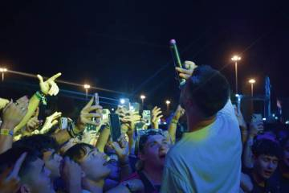
musica-img-6317HEROvisual 8 · profesional 8 · redundancia bajaGesto y respuesta en el mismo encuadre; caras identificables (ver derechos)/media/projects/photo-archive/musica-img-6317.webpmusica-img-6294SELECCIÓNvisual 8 · profesional 7 · redundancia bajaAporta un registro emocional distinto; necesario en la secuencia/media/projects/photo-archive/musica-img-6294.webpmusica-img-4959SELECCIÓNvisual 8 · profesional 7 · redundancia bajaComposición más arriesgada de la serie; cielo como fondo limpio/media/projects/photo-archive/musica-img-4959.webpentre-tiendas-y-tambores-038HEROvisual 8 · profesional 8 · redundancia altaPortada actual (v2): legible en pequeño, sin consigna legible, cuenta el «tambores» del título/media/projects/entre-tiendas-y-tambores/entre-tiendas-y-tambores-038.webpentre-tiendas-y-tambores-009HEROvisual 8 · profesional 8 · redundancia bajaSíntesis: objeto + texto + persona; legible en miniatura y periodísticamente precisa/media/projects/entre-tiendas-y-tambores/entre-tiendas-y-tambores-009.webpentre-tiendas-y-tambores-015HEROvisual 8 · profesional 8 · redundancia bajaDice de qué va el campamento sin pie; la mejor nocturna de contexto/media/projects/entre-tiendas-y-tambores/entre-tiendas-y-tambores-015.webpentre-tiendas-y-tambores-023HEROvisual 8 · profesional 8 · redundancia media (con 032)Sol reconocible al instante; multitud expresiva; portada posible para la serie/media/projects/entre-tiendas-y-tambores/entre-tiendas-y-tambores-023.webpentre-tiendas-y-tambores-024HEROvisual 8 · profesional 8 · redundancia bajaÚnica imagen con policía; necesita pie factual, no interpretativo/media/projects/entre-tiendas-y-tambores/entre-tiendas-y-tambores-024.webpentre-tiendas-y-tambores-027HEROvisual 8 · profesional 8 · redundancia media (con 026)La imagen más expresiva de la serie; gráfica (brazos contra el negro)/media/projects/entre-tiendas-y-tambores/entre-tiendas-y-tambores-027.webp
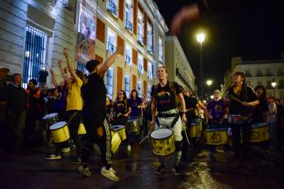
entre-tiendas-y-tambores-036HEROvisual 8 · profesional 8 · redundancia altaEnergía y reflejos; la más cinematográfica de la batucada/media/projects/entre-tiendas-y-tambores/entre-tiendas-y-tambores-036.webpretrato-img-5800HEROvisual 8 · profesional 8 · redundancia bajaRetrato más sólido y menos dependiente de la localización/media/projects/photo-archive/retrato-img-5800.webp
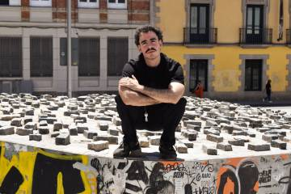
retrato-img-5436HEROvisual 8 · profesional 8 · redundancia bajaGráfica, limpia, color coherente; muy editorial/media/projects/photo-archive/retrato-img-5436.webpretrato-img-6676HEROvisual 8 · profesional 8 · redundancia bajaLa mejor dirigida de la serie: localización, luz y pose trabajan juntas/media/projects/photo-archive/retrato-img-6676.webp
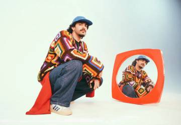
estudio-6cf759e9-54b6-4c69-b082-b80f6e4fad92HEROvisual 8 · profesional 8 · redundancia alta (con dsc-1345)Concepto visual claro y resuelto; portada actual acertada/media/projects/photo-archive/estudio-6cf759e9-54b6-4c69-b082-b80f6e4fad92.webpcalle-img-4748SELECCIÓNvisual 7 · profesional 7 · redundancia bajaLa mejor interacción de la serie de calle; dos personajes, dos capas/media/projects/photo-archive/calle-img-4748.webp
Secuencias propuestas por serie (orden recomendado frente al actual)
Música en directo · portada propuesta: musica-img-6313 · alternativa: musica-img-6385 (si Sofía confirma que es la foto de Kinder Malo)
Propuesta (12)
1musica-img-6313
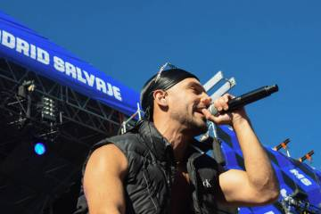
2musica-img-4937
3musica-img-6385
4musica-img-4959
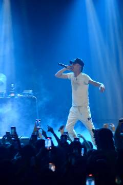
5musica-img-4662
6musica-img-5179
7musica-img-6317
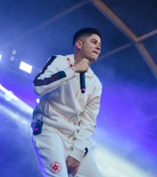
8musica-img-4989
9musica-img-6294
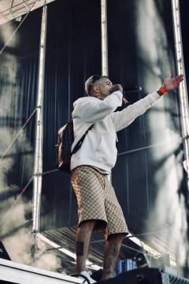
10musica-img-4954
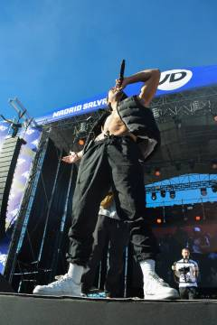
11musica-img-4929
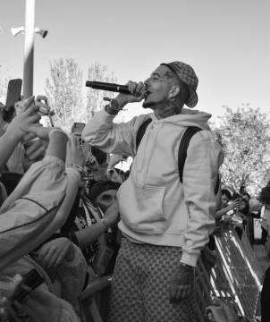
12musica-img-4965
Actual (portada + ensayo) (13)
1musica-img-6313
2musica-img-4768
3musica-img-6385
4musica-img-6294
5musica-img-4937
6musica-img-4974
7musica-img-4959
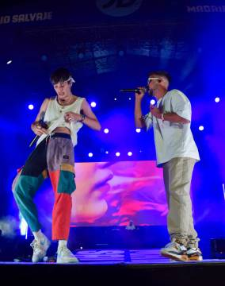
8musica-img-6299
9musica-img-4989
10musica-img-6377
11musica-img-4662
12musica-img-4776
13musica-img-5179
Entre tiendas y tambores · portada propuesta: entre-tiendas-y-tambores-038 · alternativa: entre-tiendas-y-tambores-023
Propuesta (17)
1etyt-038
2etyt-002
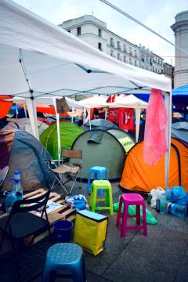
3etyt-006
4etyt-009
5etyt-005
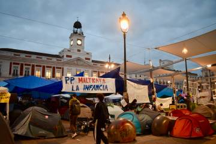
6etyt-011
7etyt-020
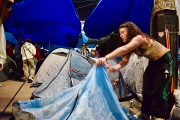
8etyt-021
9etyt-015
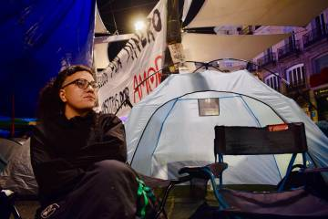
10etyt-017
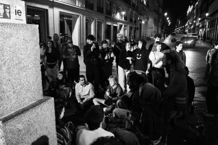
11etyt-012
12etyt-023
13etyt-024
14etyt-027
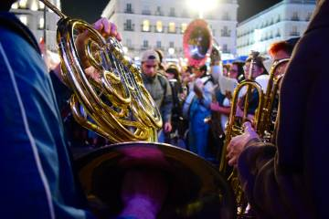
15etyt-030
16etyt-036
17etyt-037
Actual (portada + ensayo) (16)
1etyt-038
2etyt-004
3etyt-005
4etyt-003
5etyt-006
6etyt-021
7etyt-017
8etyt-009
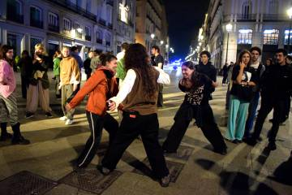
9etyt-013
10etyt-018
11etyt-012
12etyt-033
13etyt-027
14etyt-030
15etyt-031
16etyt-037
Retrato y editorial · portada propuesta: retrato-img-5800 · alternativa: retrato-img-5436
musica-img-6313HEROvisual 8 · profesional 8 · redundancia bajaÚnica foto que cuenta el concierto desde el punto de vista del artista; funciona en miniatura/media/projects/photo-archive/musica-img-6313.webpmusica-img-6385HEROvisual 8 · profesional 8 · redundancia bajaLuz de concierto resuelta expresivamente; identidad visual fuerte/media/projects/photo-archive/musica-img-6385.webpmusica-img-4768ARCHIVOvisual 6 · profesional 6 · redundancia mediaLavada por la bruma; la pantalla compite con el sujeto/media/projects/photo-archive/musica-img-4768.webpmusica-img-4937SELECCIÓNvisual 7 · profesional 7 · redundancia mediaPrueba documental del evento sin necesidad de pie/media/projects/photo-archive/musica-img-4937.webpmusica-img-4959SELECCIÓNvisual 8 · profesional 7 · redundancia bajaComposición más arriesgada de la serie; cielo como fondo limpio/media/projects/photo-archive/musica-img-4959.webpmusica-img-4965SELECCIÓNvisual 7 · profesional 7 · redundancia alta (con 4974)Elegir esta o 4974: misma situación/media/projects/photo-archive/musica-img-4965.webpmusica-img-4974ARCHIVOvisual 7 · profesional 6 · redundancia alta (con 4965)Variante en color de 4965; la B/N ordena mejor el fondo/media/projects/photo-archive/musica-img-4974.webpmusica-img-6294SELECCIÓNvisual 8 · profesional 7 · redundancia bajaAporta un registro emocional distinto; necesario en la secuencia/media/projects/photo-archive/musica-img-6294.webpmusica-img-6299ARCHIVOvisual 6 · profesional 6 · redundancia mediaDescriptiva pero sin momento/media/projects/photo-archive/musica-img-6299.webpmusica-img-4989SELECCIÓNvisual 7 · profesional 7 · redundancia bajaRetrato de escenario con expresión; variedad de plano/media/projects/photo-archive/musica-img-4989.webpmusica-img-6377ARCHIVOvisual 6 · profesional 6 · redundancia mediaÚtil como contexto; prescindible frente a 6385/media/projects/photo-archive/musica-img-6377.webpmusica-img-4662SELECCIÓNvisual 7 · profesional 7 · redundancia mediaMejor vertical de relación escenario-público/media/projects/photo-archive/musica-img-4662.webpmusica-img-4776ARCHIVOvisual 7 · profesional 6 · redundancia mediaBonita de luz, floja de sujeto/media/projects/photo-archive/musica-img-4776.webpmusica-img-5179HEROvisual 8 · profesional 8 · redundancia bajaFotoperiodismo musical: cuenta algo sin el artista/media/projects/photo-archive/musica-img-5179.webpmusica-img-6154ARCHIVOvisual 6 · profesional 6 · redundancia media (con 6294)El operador distrae; 6294 cubre el mismo registro mejor/media/projects/photo-archive/musica-img-6154.webpmusica-img-6317HEROvisual 8 · profesional 8 · redundancia bajaGesto y respuesta en el mismo encuadre; caras identificables (ver derechos)/media/projects/photo-archive/musica-img-6317.webpmusica-img-4929SELECCIÓNvisual 7 · profesional 7 · redundancia media (con 5038)Una de las dos de contrapicado con rótulo; elegir frente a 5038/media/projects/photo-archive/musica-img-4929.webpmusica-img-4954SELECCIÓNvisual 7 · profesional 7 · redundancia media (con 6385)Buena, pero 6385 es la versión más fuerte del mismo tipo/media/projects/photo-archive/musica-img-4954.webpmusica-img-5004ARCHIVOvisual 6 · profesional 6 · redundancia alta (con 5038)Variante inferior de 5038/media/projects/photo-archive/musica-img-5004.webpmusica-img-5038ARCHIVOvisual 7 · profesional 6 · redundancia alta (con 5004, 4929)Se queda 4929 como foto de rótulo/media/projects/photo-archive/musica-img-5038.webpmusica-img-5174ARCHIVOvisual 6 · profesional 6 · redundancia mediaSin momento ni luz especial/media/projects/photo-archive/musica-img-5174.webp
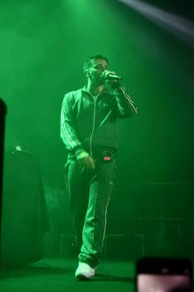
musica-img-4596ARCHIVOvisual 6 · profesional 6 · redundancia bajaEl verde es llamativo pero la foto no cuenta nada más; el móvil en la esquina molesta/media/projects/photo-archive/musica-img-4596.webp
Retrato y editorial · todas las fotografías (29)
retrato-img-6676HEROvisual 8 · profesional 8 · redundancia bajaLa mejor dirigida de la serie: localización, luz y pose trabajan juntas/media/projects/photo-archive/retrato-img-6676.webpretrato-img-6636SELECCIÓNvisual 7 · profesional 7 · redundancia mediaBuena de ambiente; complementa a 6676/media/projects/photo-archive/retrato-img-6636.webpretrato-img-6643ARCHIVOvisual 6 · profesional 6 · redundancia alta (con 6676)Versión plana de la misma sesión/media/projects/photo-archive/retrato-img-6643.webpretrato-img-6667ARCHIVOvisual 6 · profesional 6 · redundancia alta (con 6668)Pilar en primer plano divide; variante de 6668/media/projects/photo-archive/retrato-img-6667.webpretrato-img-6668ARCHIVOvisual 6 · profesional 6 · redundancia alta (con 6667)Elegir una de las dos de «caminando»; ninguna supera a 6636/media/projects/photo-archive/retrato-img-6668.webpretrato-img-5541ARCHIVOvisual 6 · profesional 6 · redundancia media (con 5522)Composición dispersa; el cartel SALIDA roba atención/media/projects/photo-archive/retrato-img-5541.webpretrato-img-5551SELECCIÓNvisual 7 · profesional 7 · redundancia bajaAlegre y resuelta; mejor foto de esa sesión/media/projects/photo-archive/retrato-img-5551.webpretrato-img-5800HEROvisual 8 · profesional 8 · redundancia bajaRetrato más sólido y menos dependiente de la localización/media/projects/photo-archive/retrato-img-5800.webpretrato-img-5805SELECCIÓNvisual 7 · profesional 7 · redundancia media (con 5795)Complemento de 5800 con entorno/media/projects/photo-archive/retrato-img-5805.webpretrato-img-5319SELECCIÓNvisual 7 · profesional 7 · redundancia alta (con 5323, 5328)Elegir una de las tres del baño rojo; esta es la más editorial/media/projects/photo-archive/retrato-img-5319.webpretrato-img-5323ARCHIVOvisual 7 · profesional 6 · redundancia altaVariante con risa; la pose seria lee mejor en pequeño/media/projects/photo-archive/retrato-img-5323.webpretrato-img-5436HEROvisual 8 · profesional 8 · redundancia bajaGráfica, limpia, color coherente; muy editorial/media/projects/photo-archive/retrato-img-5436.webpretrato-img-5490SELECCIÓNvisual 8 · profesional 7 · redundancia bajaMejor primer plano de la serie; portada actual (v2) razonable/media/projects/photo-archive/retrato-img-5490.webpretrato-img-2403ARCHIVOvisual 6 · profesional 6 · redundancia media (con 2364)Correcta sin más/media/projects/photo-archive/retrato-img-2403.webpretrato-img-5522ARCHIVOvisual 6 · profesional 6 · redundancia alta (con 5541)Duplicado de situación de 5541/media/projects/photo-archive/retrato-img-5522.webp
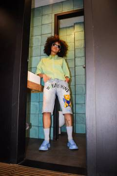
retrato-img-5597ARCHIVOvisual 6 · profesional 6 · redundancia mediaMarco de puerta correcto; sin gesto/media/projects/photo-archive/retrato-img-5597.webpretrato-img-5795ARCHIVOvisual 6 · profesional 6 · redundancia alta (con 5800, 5805)Mobiliario de terraza distrae; 5800 resuelve la misma pose mejor/media/projects/photo-archive/retrato-img-5795.webpretrato-img-5808ARCHIVOvisual 6 · profesional 6 · redundancia mediaAmbiente de bar poco definido/media/projects/photo-archive/retrato-img-5808.webpretrato-img-5851SELECCIÓNvisual 7 · profesional 7 · redundancia media (con 5805)Más actitud que 5805; buena para pareja con 5800/media/projects/photo-archive/retrato-img-5851.webpretrato-img-5860SELECCIÓNvisual 7 · profesional 7 · redundancia media (con 5800)Complementa a 5800 (plano más cerrado); elegir una de las dos para portada/media/projects/photo-archive/retrato-img-5860.webpretrato-img-6648SELECCIÓNvisual 7 · profesional 7 · redundancia mediaEl coche quemado añade relato a la sesión; mejor plano general de la nave/media/projects/photo-archive/retrato-img-6648.webpretrato-img-5328SELECCIÓNvisual 7 · profesional 7 · redundancia alta (con 5319)La sonrisa y la frontalidad la hacen más amable que 5319; una de las dos/media/projects/photo-archive/retrato-img-5328.webpretrato-img-5400ARCHIVOvisual 6 · profesional 6 · redundancia mediaEl grafiti compite con la figura; figura pequeña/media/projects/photo-archive/retrato-img-5400.webpretrato-img-5425ARCHIVOvisual 6 · profesional 6 · redundancia bajaLocalización menos lograda; mirada fuera de cámara/media/projects/photo-archive/retrato-img-5425.webpretrato-img-5450ARCHIVOvisual 7 · profesional 6 · redundancia mediaCorrecta; 5436 la supera con la misma persona/media/projects/photo-archive/retrato-img-5450.webpretrato-img-5454RETIRAR DE SELECCIÓNvisual 6 · profesional 5 · redundancia bajaEl texto de la pegatina convierte el retrato en consigna; sin pie no procede en escaparate (puede quedar en archivo)/media/projects/photo-archive/retrato-img-5454.webpretrato-img-5476ARCHIVOvisual 6 · profesional 6 · redundancia alta (con 5487)Una de las dos del bolso; 5487 mejor/media/projects/photo-archive/retrato-img-5476.webpretrato-img-5487SELECCIÓNvisual 7 · profesional 7 · redundancia alta (con 5476)Mejor pose de la sesión de terraza; color coherente/media/projects/photo-archive/retrato-img-5487.webpretrato-img-2364ARCHIVOvisual 5 · profesional 5 · redundancia media (con 2403)Sin rostro ni gesto; la menos informativa/media/projects/photo-archive/retrato-img-2364.webp
Estudio y editorial · todas las fotografías (13)
estudio-6cf759e9-54b6-4c69-b082-b80f6e4fad92HEROvisual 8 · profesional 8 · redundancia alta (con dsc-1345)Concepto visual claro y resuelto; portada actual acertada/media/projects/photo-archive/estudio-6cf759e9-54b6-4c69-b082-b80f6e4fad92.webpestudio-dsc-1345ARCHIVOvisual 7 · profesional 7 · redundancia alta (con 6cf7)Variante; la mirada a cámara de 6cf7 es más fuerte/media/projects/photo-archive/estudio-dsc-1345.webpestudio-dsc-1046SELECCIÓNvisual 7 · profesional 7 · redundancia bajaÚnica con instrumento; conecta con los encargos musicales/media/projects/photo-archive/estudio-dsc-1046.webpestudio-dsc-1233ARCHIVOvisual 6 · profesional 6 · redundancia mediaDemasiado aire; la figura queda pequeña y el concepto se pierde/media/projects/photo-archive/estudio-dsc-1233.webpestudio-dsc-1247ARCHIVOvisual 6 · profesional 6 · redundancia mediaPose forzada; poco aporta/media/projects/photo-archive/estudio-dsc-1247.webpestudio-dsc-1276SELECCIÓNvisual 7 · profesional 7 · redundancia alta (con dsc-1293)Una de las dos de gran angular; esta es la más sobria/media/projects/photo-archive/estudio-dsc-1276.webpestudio-dsc-1251SELECCIÓNvisual 7 · profesional 7 · redundancia bajaLa única que une a los dos protagonistas; útil como cierre/media/projects/photo-archive/estudio-dsc-1251.webpestudio-dsc-1321SELECCIÓNvisual 7 · profesional 7 · redundancia mediaAtrezo bien integrado; buena verticalidad/media/projects/photo-archive/estudio-dsc-1321.webpestudio-dsc-1378SELECCIÓNvisual 7 · profesional 7 · redundancia media (con dsc-1386)Mejor de las dos del televisor/media/projects/photo-archive/estudio-dsc-1378.webpestudio-dsc-1386ARCHIVOvisual 6 · profesional 6 · redundancia alta (con dsc-1378)Variante con figura más pequeña/media/projects/photo-archive/estudio-dsc-1386.webpestudio-80c82615-228f-40a7-99de-ac4c0d672e38REUBICARvisual 7 · profesional 6 · redundancia bajaNo es de estudio: exterior al atardecer; mejor en Retrato o fuera de la serie/media/projects/photo-archive/estudio-80c82615-228f-40a7-99de-ac4c0d672e38.webpestudio-dsc-1255ARCHIVOvisual 6 · profesional 6 · redundancia media (con 1293)1293 cuenta lo mismo con más gracia/media/projects/photo-archive/estudio-dsc-1255.webpestudio-dsc-1293SELECCIÓNvisual 7 · profesional 7 · redundancia alta (con 1276)Más viva que 1276; para variedad, una de las dos/media/projects/photo-archive/estudio-dsc-1293.webp
Calle y documental · todas las fotografías (10)
calle-img-3352SELECCIÓNvisual 7 · profesional 7 · redundancia media (con 3371)Establece el lugar y la escala; necesita pie (qué, cuándo)/media/projects/photo-archive/calle-img-3352.webpcalle-img-3363ARCHIVOvisual 6 · profesional 6 · redundancia mediaEl gesto queda tapado por la pancarta cortada/media/projects/photo-archive/calle-img-3363.webpcalle-img-3371SELECCIÓNvisual 7 · profesional 7 · redundancia media (con 3352)Más información que 3352 (carteles legibles); elegir esta como apertura de la cobertura/media/projects/photo-archive/calle-img-3371.webpcalle-img-4741SELECCIÓNvisual 7 · profesional 7 · redundancia bajaBuena foto de calle clásica: capas, luz, rótulo/media/projects/photo-archive/calle-img-4741.webpcalle-img-4756ARCHIVOvisual 6 · profesional 6 · redundancia bajaDescriptiva, sin instante/media/projects/photo-archive/calle-img-4756.webpcalle-img-4458ARCHIVOvisual 6 · profesional 5 · redundancia bajaEjercicio formal sin relación con el resto/media/projects/photo-archive/calle-img-4458.webpcalle-img-4705HEROvisual 8 · profesional 7 · redundancia bajaLa mejor de calle: escala, color, momento; portada propuesta en v2 y confirmada (menores: ver derechos)/media/projects/photo-archive/calle-img-4705.webpcalle-img-4725ARCHIVOvisual 6 · profesional 5 · redundancia bajaEjercicio de repetición; sin personas ni relato/media/projects/photo-archive/calle-img-4725.webpcalle-img-4744ARCHIVOvisual 5 · profesional 5 · redundancia bajaLa papelera arruina el encuadre/media/projects/photo-archive/calle-img-4744.webpcalle-img-4748SELECCIÓNvisual 7 · profesional 7 · redundancia bajaLa mejor interacción de la serie de calle; dos personajes, dos capas/media/projects/photo-archive/calle-img-4748.webp
Entre tiendas y tambores · todas las fotografías (38)
entre-tiendas-y-tambores-001SELECCIÓNvisual 7 · profesional 7 · redundancia media (con 011)Contexto diurno con personas; dentro del ensayo la pancarta es documento; no como portada del sitio/media/projects/entre-tiendas-y-tambores/entre-tiendas-y-tambores-001.webpentre-tiendas-y-tambores-002SELECCIÓNvisual 7 · profesional 7 · redundancia bajaMejor plano de situación: Sol reconocible y la escala del campamento/media/projects/entre-tiendas-y-tambores/entre-tiendas-y-tambores-002.webpentre-tiendas-y-tambores-003ARCHIVOvisual 6 · profesional 6 · redundancia alta (con 034/035)Las verticales nocturnas de Tío Pepe cuentan lo mismo mejor/media/projects/entre-tiendas-y-tambores/entre-tiendas-y-tambores-003.webpentre-tiendas-y-tambores-004ARCHIVOvisual 6 · profesional 6 · redundancia mediaPancartas cortadas; menos clara que 015/media/projects/entre-tiendas-y-tambores/entre-tiendas-y-tambores-004.webpentre-tiendas-y-tambores-005SELECCIÓNvisual 7 · profesional 7 · redundancia bajaAporta una capa que ninguna otra foto tiene (los medios cubriendo)/media/projects/entre-tiendas-y-tambores/entre-tiendas-y-tambores-005.webpentre-tiendas-y-tambores-006SELECCIÓNvisual 7 · profesional 7 · redundancia bajaDetalle doméstico que explica la organización del campamento/media/projects/entre-tiendas-y-tambores/entre-tiendas-y-tambores-006.webpentre-tiendas-y-tambores-007ARCHIVOvisual 6 · profesional 6 · redundancia mediaCartel menos específico que 009/014/media/projects/entre-tiendas-y-tambores/entre-tiendas-y-tambores-007.webpentre-tiendas-y-tambores-008SELECCIÓNvisual 7 · profesional 7 · redundancia media (con 001)Conciencia de cámara explícita (útil para consentimiento); rostros identificables/media/projects/entre-tiendas-y-tambores/entre-tiendas-y-tambores-008.webpentre-tiendas-y-tambores-009HEROvisual 8 · profesional 8 · redundancia bajaSíntesis: objeto + texto + persona; legible en miniatura y periodísticamente precisa/media/projects/entre-tiendas-y-tambores/entre-tiendas-y-tambores-009.webpentre-tiendas-y-tambores-010ARCHIVOvisual 6 · profesional 6 · redundancia mediaMensaje más agresivo y menos informativo; la pancarta reaparece en 018/media/projects/entre-tiendas-y-tambores/entre-tiendas-y-tambores-010.webpentre-tiendas-y-tambores-011SELECCIÓNvisual 7 · profesional 7 · redundancia media (con 001)La mejor luz del bloque diurno; sirve de bisagra hacia la noche/media/projects/entre-tiendas-y-tambores/entre-tiendas-y-tambores-011.webpentre-tiendas-y-tambores-012SELECCIÓNvisual 7 · profesional 7 · redundancia media (con 018)Una de las dos B/N; el corro cuenta la asamblea/media/projects/entre-tiendas-y-tambores/entre-tiendas-y-tambores-012.webpentre-tiendas-y-tambores-013SELECCIÓNvisual 7 · profesional 7 · redundancia bajaAlegría espontánea; variedad de registro/media/projects/entre-tiendas-y-tambores/entre-tiendas-y-tambores-013.webpentre-tiendas-y-tambores-014SELECCIÓNvisual 7 · profesional 7 · redundancia bajaEl cartel es la voz del campamento; pie factual («cartel sobre una tienda»)/media/projects/entre-tiendas-y-tambores/entre-tiendas-y-tambores-014.webpentre-tiendas-y-tambores-015HEROvisual 8 · profesional 8 · redundancia bajaDice de qué va el campamento sin pie; la mejor nocturna de contexto/media/projects/entre-tiendas-y-tambores/entre-tiendas-y-tambores-015.webpentre-tiendas-y-tambores-016SELECCIÓNvisual 7 · profesional 7 · redundancia bajaApertura del bloque musical/media/projects/entre-tiendas-y-tambores/entre-tiendas-y-tambores-016.webpentre-tiendas-y-tambores-017SELECCIÓNvisual 7 · profesional 7 · redundancia bajaÚnico retrato quieto de la serie; rostro identificable (consentimiento)/media/projects/entre-tiendas-y-tambores/entre-tiendas-y-tambores-017.webpentre-tiendas-y-tambores-018SELECCIÓNvisual 8 · profesional 7 · redundancia media (con 012)Momento emotivo real; el B/N la separa visualmente del resto (decidir si mantener dos B/N)/media/projects/entre-tiendas-y-tambores/entre-tiendas-y-tambores-018.webpentre-tiendas-y-tambores-019SELECCIÓNvisual 7 · profesional 7 · redundancia media (con 013)El salto da ritmo; redundante en función con 013/media/projects/entre-tiendas-y-tambores/entre-tiendas-y-tambores-019.webpentre-tiendas-y-tambores-020SELECCIÓNvisual 7 · profesional 7 · redundancia bajaProceso, no solo resultado/media/projects/entre-tiendas-y-tambores/entre-tiendas-y-tambores-020.webpentre-tiendas-y-tambores-021SELECCIÓNvisual 7 · profesional 7 · redundancia bajaGesto de trabajo cotidiano; candid/media/projects/entre-tiendas-y-tambores/entre-tiendas-y-tambores-021.webpentre-tiendas-y-tambores-022ARCHIVOvisual 6 · profesional 6 · redundancia alta (con 023, 033)Variante vertical de 023/033/media/projects/entre-tiendas-y-tambores/entre-tiendas-y-tambores-022.webpentre-tiendas-y-tambores-023HEROvisual 8 · profesional 8 · redundancia media (con 032)Sol reconocible al instante; multitud expresiva; portada posible para la serie/media/projects/entre-tiendas-y-tambores/entre-tiendas-y-tambores-023.webpentre-tiendas-y-tambores-024HEROvisual 8 · profesional 8 · redundancia bajaÚnica imagen con policía; necesita pie factual, no interpretativo/media/projects/entre-tiendas-y-tambores/entre-tiendas-y-tambores-024.webpentre-tiendas-y-tambores-025SELECCIÓNvisual 7 · profesional 7 · redundancia mediaCartel legible y expresión; rostros identificables/media/projects/entre-tiendas-y-tambores/entre-tiendas-y-tambores-025.webpentre-tiendas-y-tambores-026SELECCIÓNvisual 7 · profesional 7 · redundancia media (con 027)Plano corto necesario en la secuencia/media/projects/entre-tiendas-y-tambores/entre-tiendas-y-tambores-026.webpentre-tiendas-y-tambores-027HEROvisual 8 · profesional 8 · redundancia media (con 026)La imagen más expresiva de la serie; gráfica (brazos contra el negro)/media/projects/entre-tiendas-y-tambores/entre-tiendas-y-tambores-027.webpentre-tiendas-y-tambores-028ARCHIVOvisual 6 · profesional 6 · redundancia alta (con 024)024 resuelve mejor la misma información/media/projects/entre-tiendas-y-tambores/entre-tiendas-y-tambores-028.webpentre-tiendas-y-tambores-029ARCHIVOvisual 6 · profesional 6 · redundancia alta (con 032)Redundante/media/projects/entre-tiendas-y-tambores/entre-tiendas-y-tambores-029.webpentre-tiendas-y-tambores-030SELECCIÓNvisual 7 · profesional 7 · redundancia bajaDetalle que cambia el ritmo visual; justifica «tambores» y metales/media/projects/entre-tiendas-y-tambores/entre-tiendas-y-tambores-030.webpentre-tiendas-y-tambores-031SELECCIÓNvisual 7 · profesional 7 · redundancia alta (con 036-038)Una de cuatro de la batucada; elegir dos/media/projects/entre-tiendas-y-tambores/entre-tiendas-y-tambores-031.webpentre-tiendas-y-tambores-032ARCHIVOvisual 7 · profesional 7 · redundancia alta (con 023, 035)Escala ya cubierta por 023/035/media/projects/entre-tiendas-y-tambores/entre-tiendas-y-tambores-032.webpentre-tiendas-y-tambores-033ARCHIVOvisual 6 · profesional 6 · redundancia alta (con 022)Variante/media/projects/entre-tiendas-y-tambores/entre-tiendas-y-tambores-033.webpentre-tiendas-y-tambores-034ARCHIVOvisual 7 · profesional 7 · redundancia alta (con 035)035 la supera (más multitud y pancartas)/media/projects/entre-tiendas-y-tambores/entre-tiendas-y-tambores-034.webpentre-tiendas-y-tambores-035SELECCIÓNvisual 7 · profesional 7 · redundancia alta (con 034)Mejor vertical de escala; útil en móvil/media/projects/entre-tiendas-y-tambores/entre-tiendas-y-tambores-035.webpentre-tiendas-y-tambores-036HEROvisual 8 · profesional 8 · redundancia altaEnergía y reflejos; la más cinematográfica de la batucada/media/projects/entre-tiendas-y-tambores/entre-tiendas-y-tambores-036.webpentre-tiendas-y-tambores-037SELECCIÓNvisual 8 · profesional 8 · redundancia altaMuy buena; elegir entre 036/037/038 para portada/media/projects/entre-tiendas-y-tambores/entre-tiendas-y-tambores-037.webpentre-tiendas-y-tambores-038HEROvisual 8 · profesional 8 · redundancia altaPortada actual (v2): legible en pequeño, sin consigna legible, cuenta el «tambores» del título/media/projects/entre-tiendas-y-tambores/entre-tiendas-y-tambores-038.webp
Vídeos · 8 fotogramas equiespaciados por pieza (sin audio; ver PHASE5_VIDEO_REVIEW.md)
Madrid a pie, cámara al cuello · 03:48
En el decorado de «9‑1‑1» · 00:58
MyMUN, paso a paso · 01:02
Probando el vivo X300 Pro · 02:43
4 MINUTOS · 03:59
Tras el sofá · 05:59
VERSIÓN BETA · 00:58
Silver Praxis — Condición Perfecta · 03:05
Generado el 2026-10-11 en la rama audit/sofia-photojournalism-phase5. No publicar en Internet.
Adenda · segunda pasada con audio y estructura de planos
4 MINUTOS · fotogramas a 5, 20, 30, 60, 100, 150, 186, 210 y 236 sP0-6La copia de Mux no tiene pista de audio (manifiesto HLS sin códec de audio; rendiciones de 270 p y 1080 p sin stream). Subtítulos incrustados visibles en 30, 150, 186 y 210 s. Cambios de plano detectados: 16 cortes en 0–17 s (prólogo con vídeollamadas), planos largos 17–89 · 89–103 · 105–160 · 160–212 s, créditos desde 212 s.stream.mux.com/m2dxVaMBZKQ8wX7dNCs01ic6QwJB302OISItsFiOHbF200.m3u8
9‑1‑1 (58 s): sin preguntas en el audio; presentación, paso al invitado y cierre (P1-9).
Madrid a pie (229 s, 114 s hablados): recorrido por paradas, habla espontánea con autocorrecciones; ocho tramos sin voz compatibles con música no identificada.
MyMUN (63 s): tutorial de 11 pasos leído sin muletillas.
vivo X300 Pro (164 s): ficha técnica leída de principio a fin, 183 palabras por minuto (P2-9).
Tras el sofá (359 s): diálogo inteligible desde 80 s; clímax 313–345 s; arranque mudo de 80 s (P1-10).
VERSIÓN BETA (58 s): voz en off de cinco frases con eslogan final; locución sin acreditar (P2-11).
Condición Perfecta: sin voz reconocida (música).
Detalle en PHASE5_VIDEO_REVIEW.md, apéndice. Transcripciones automáticas, sin escucha humana.